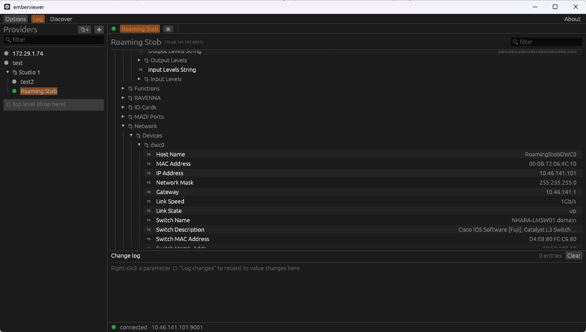

A free, cross-platform Ember+ viewer
Browse, monitor and control Ember+ devices from one clean desktop app
on Windows, macOS and Linux. An open, maintained replacement for Lawo's closed-source
EmberPlusView.exe.
Prebuilt binaries are published on the GitHub Releases page. Prefer source? See Getting started.
New Server mode
Ember+ gear usually sits behind a firewall only the engineering PC can reach, and the embedded devices themselves cap how many consumers may connect. Flip on server mode and the desktop app becomes the gateway: it holds one connection per device and fans the live tree out to every browser on your network — no app to install on the phone, and the phone never touches the gear directly.
Ember+ devices ──TCP──► emberviewer (engineering PC) ──HTTP / WebSocket──► 📱 phone
one connection per device shared live tree 💻 laptop
A fan-out hub shares a single TCP connection and subscription set across every viewer, so a device sees just one consumer. Closing a browser never drops another viewer's updates.
The very same egui UI, compiled to WebAssembly. Documents cross as the device's original Glow/BER bytes, so each browser rebuilds a byte-identical tree.
Token-protected by default (the token rides in the page URL). Toggle open on LAN for no-auth on a trusted network, or read-only so browsers can watch but not change anything.
Bind the right network interface, then share the shown URL or scan the QR code. Browse the tree, set values, read meters, route matrices and invoke functions from anywhere on the WiFi.
Why it exists
For years EmberPlusView.exe has been the de-facto tool for poking at Ember+
devices — but it has real limitations. emberviewer rebuilds an equivalent from the
protocol up, in the open.
The original viewer's source was never published, so it can't be fixed, audited or extended by the community.
It ships as a Windows binary alone. emberviewer runs natively on Windows, macOS and Linux from a single codebase.
No updates since 2022. emberviewer is actively developed and MIT-licensed, so it can keep moving.
Features
A focused tool that gets out of your way — fast browsing, live values and real control.
Serve the UI to phones and laptops on your LAN — token-protected, with read-only and open-LAN modes. Learn more.
Organise providers in folders with drag-and-drop, saved between sessions.
Connect to any Ember+ provider over TCP (default port 9000).
Walk the provider tree on demand with getDirectory, expanding only what you open.
Read parameter values and set them, with live subscriptions for changes.
Dedicated set and pulse controls for boolean parameters.
Route on a crosspoint grid with device-resolved source/target labels and configurable orientation.
Call provider functions and inspect their results.
Several simultaneous provider sessions, each in its own tab.
Filter the tree, copy a node's path, and find what you need fast.
Automatic reconnection with exponential backoff when a link drops.
A running log of parameter changes for monitoring and debugging.
StreamFormat-aware decode drives a vertical bar-graph meter for the selected parameter, with tri-colour level zones.
Tear any meter into its own window and pin it always-on-top — keep levels in view while you work in another app.
Friendly enum labels, and sliders that honour each parameter's min/max, display factor and unit.
Surfaces isOnline — offline subtrees grey out and refresh automatically when they return.
Finds Ember+ providers on the LAN automatically (_ember._tcp).
Startup mode, child ordering, descriptions, keep-alive interval and more.
A look inside
The GUI is built with egui/eframe for a fast, native feel on every platform.

Getting started
Prebuilt binaries will be on the Releases page. To build from source you only need a Rust toolchain.
Grab the toolchain from rustup.rs if you don't have it.
git clone https://github.com/mattlamb99/emberviewer
cd emberviewercargo build --releaseThe app lands in target/release/. Run it with cargo run --release -p emberviewer.
Add a provider to the address book by its host and port (Ember+ defaults to 9000), then connect and browse. New to Ember+? Read the protocol primer.
A short primer on what Ember+ is — providers, the tree of nodes, parameters, matrices and functions, and how getDirectory / set / subscribe work.